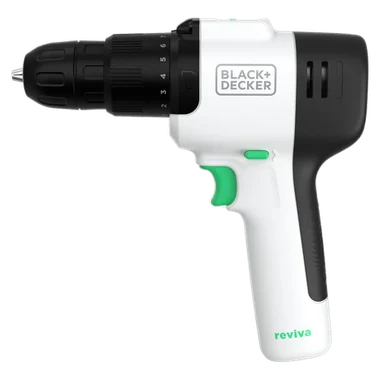
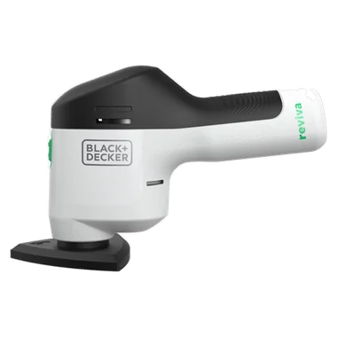
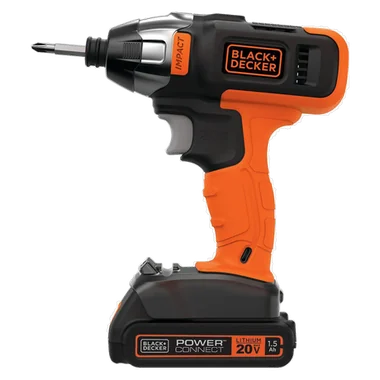
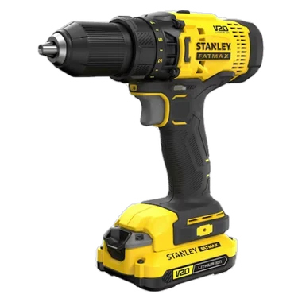

Portal del equipo
AURELIO
Entrena, marca tu turno y revisa tu malla. Todo desde un solo lugar.




Uso interno del equipo

Toca una pieza del taladro
Portal del equipo
Entrena, marca tu turno y revisa tu malla. Todo desde un solo lugar.




Uso interno del equipo